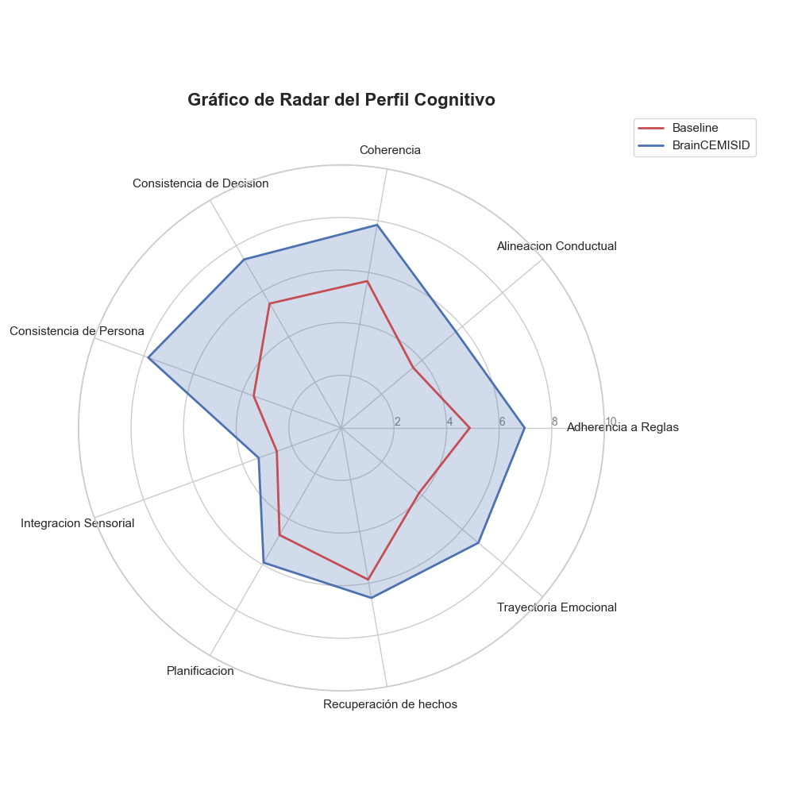
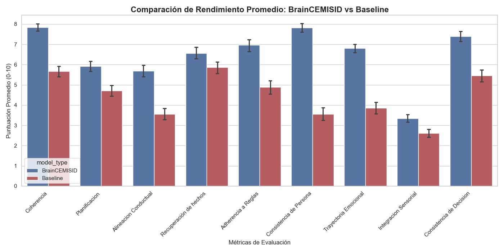

Un marco inspirado en el paradigma COALA para dotar a los Modelos de Lenguaje de Gran Escala (LLMs) de memoria episódica vectorial, dinámica emocional interna y planificación procedimental estructurada.
BrainCEMISID desacopla la inferencia reactiva del LLM en cinco componentes especializados de orquestación cognitiva.
Filtra y extrae estímulos contextuales del entorno en 5 dimensiones sensoriales (vista, oído, tacto, olfato, gusto) modulando el foco de atención del agente.
Rastrea vectores continuos de valencia y arousal emocional (Alegría, Frustración, Ansiedad), adaptando dinámicamente la personalidad y el tono de respuesta.
Almacenes de memoria episódica a largo plazo y memoria de trabajo declarativa para recuperar hechos clave y contextos pasados vía embeddings vectoriales.
Descompone metas complejas en planes de acción ordenados multi-fase antes de emitir cualquier decisión ejecutable.
Motor de inferencia compatible con Gemini API y modelos locales Ollama (Gemma3:1b) ejecutando consolidaciones contextuales unificadas.
Framework automatizado con 9 métricas independientes para calificar cuantitativamente las respuestas en simulaciones multi-agente.
Evaluación comparativa basada en pruebas t-Student de Welch y magnitud de efecto Cohen's d sobre 1,664 iteraciones.
| Métrica Cognitiva | BrainCEMISID (Media) | Baseline LLM (Media) | p-valor (Significancia) | d de Cohen (Efecto) |
|---|---|---|---|---|
| Consistencia de Persona | 7.82 | 3.55 | < 0.0001 * | 1.55 (Masivo) |
| Trayectoria Emocional | 6.80 | 3.86 | < 0.0001 * | 1.15 (Masivo) |
| Coherencia Lógica | 7.84 | 5.67 | < 0.0001 * | 0.91 (Grande) |
| Alineación Conductual | 5.69 | 3.56 | < 0.0001 * | 0.72 (Mediano) |
| Consistencia de Decisiones | 7.40 | 5.46 | < 0.0001 * | 0.66 (Mediano) |
| Adherencia a Reglas | 6.97 | 4.88 | < 0.0001 * | 0.62 (Mediano) |
| Efectividad de Planificación | 5.92 | 4.70 | < 0.0001 * | 0.46 (Mediano) |
| Integración Sensorial | 3.35 | 2.61 | < 0.0001 * | 0.37 (Pequeño/Med) |
| Recuperación de Hechos | 6.57 | 5.86 | < 0.0010 * | 0.24 (Pequeño) |
Gráficos generados estadísticamente por el motor de análisis del proyecto.

Comparación multidimensional entre el modelo BrainCEMISID y el Baseline.

Puntuación media obtenida sobre una escala estandarizada de 0 a 10.